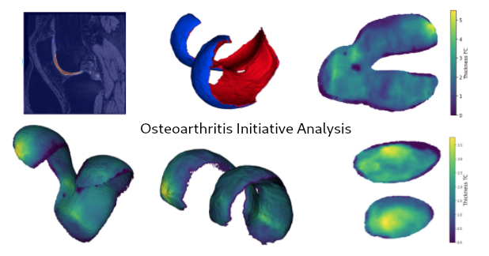

ORMIR Packages¶
Here are the Python packages created by members of the ORMIR community
Note: Code standardization across packages is work in progress!
Tissue image analysis¶
ORMIR XCT

Segmentation and morphometric analyses of HR-pQCT images

ITKIOScanco

An ITK module to read and write Scanco microCT .isq files

Organ tissue analysis¶
OAI analysis 2

An open source analysis approach for the Osteoarthitis Initiative (OAI) dataset

pyKNEEr

An open and reproducible workflows to segment and analyze femoral knee cartilage

Dafne

Annotate MRI images and training machine learning models

Mechanical analysis¶
Ciclope

Processing of micro computed tomography data to generate finite element models

Image data management¶
Muscle-BIDS

An open data standard for Muscle MR imaging

Other packages¶
Here are some packages with MSK applications from the web
QMRITools

A toolbox for analysis of quantitative magnetic resonance imaging data